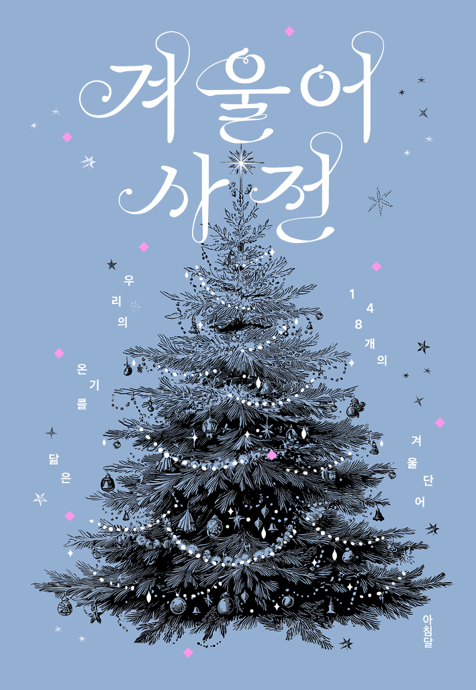
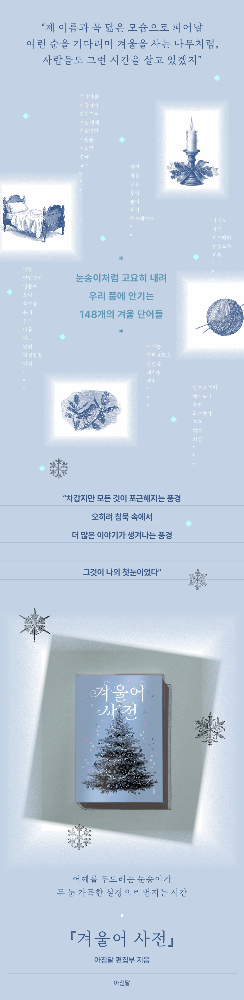

아침달 편집부와 친구들 지음 | 316쪽 | 120*174mm | 무선제본
18,000원 | 2025. 11. 25. | 아침달 발행
ISBN 979-11-94324-88-1 (02810)
분류: 문학 / 한국문학 / 에세이
지나온 계절을 돌이키며 마음속으로 품고 있던 단어를 꺼내와 자기만의 이야기로 새롭게 정의 내리는 『겨울어 사전』이 출간되었다. 올여름 『여름어 사전』을 통해, 여름이라는 시간을 힘껏 사유하고, 여름에 맺혀 있던 단어들을 함께 읽었던 시간을 지나 겨울로 도착했다. 총 148개의 단어로 구성된 이번 책은 마찬가지로 아침달 편집부를 비롯해 아침달 출간 저자들과 독자들의 원고를 받아 수록했다. 한국문학의 아름다움을 일상 가까이에 둔 사람들의 겨울에 관한 이야기가 단어 하나에서 출발해 명징한 장면으로 이어져 전환된다.
‘검은그루, 겨울눈, 겨울잠, 눈사람, 방학식, 보풀, 성탄, 입김, 코트……’ 겨울 하면 금세 떠올릴 수 있는 단어들은 누군가의 기억으로부터 재구성되어 새로운 얼굴을 빚으며 이야기가 된다. 또한, ‘가나다순, 겨울에 작아지는 사람들의 모임, 공항, 대관람차, 잠복소, 카메라’ 등 겨울을 입고 새롭게 의미가 되어가는 단어들까지 다채롭게 수록되었다. 기획의 말의 제목 「눈은 보리의 이불이다」는 속담으로, 겨울 동안 내린 눈이 봄에 싹틔울 보리를 가물지 않게 한다는 의미를 지니고 있다. 『겨울어 사전』은 우리가 간직하고 있는 단어들이, 언젠가 마음을 가물지 않고 포근히 덮어주는 눈 이불이 될 수 있지 않을까 하는 마음으로 엮은 것이다. 기획의 말에서처럼 사전은 “열어보지 않으면 아무것도 들려주지 않는 책, 그러나 단어를 두드리면 우리가 아는 것보다 훨씬 더 많은 이야기가 쏟아지는 책”이다. 단어에서 시작해 추억이 얽힌 장면을 지나, 의미를 쥐어볼 수 있는 궁극적으로 이 책을 통해 함께 보내는 겨울 속에서, 독자들이 자기만의 단어를 궁구하고 겨울에 관한 아름다운 의미를 탐색해볼 수 있었으면 좋겠다.
책에서 읽은 이야기가 내 안에 머물러 있던 어떤 이야기를 돌보게 한다면 그것은 책이 건네는 용기일 것이다. 용기를 쥐고 우리는 과거를 구조하기도 하고, 미래를 꿈꾸기도 한다. 그 사이 시간은 흘러 우리 곁을 떠나가지만 계절에 대한 기억은 켜켜이 남는다. 남겨진 계절 속에 내려앉아 추억을 숨 쉬고 있는 단어를 이야기로 정의 내리는 『겨울어 사전』이 출간되었다. 이 사전은 우리 곁에 이야기로 나타나는 책이자 자기 안에 머물러 있던 겨울 풍경을 돌보게 하는 자리이기도 하다.
올여름 출간되었던 『여름어 사전』을 통해 많은 독자들의 호응과 지지를 얻었던 만큼, 계절에 관한 단어와 이야기로부터 새롭게 정의 내리는 일은 자연스럽게 겨울로도 이어졌다. 한국문학을 사랑하는 아침달 편집자들과 아침달 출간 저자 23명, 독자 16명의 원고가 함께 수록되었다. 다양한 사람이 자신의 몫의 단어를 골라 이야기로 의미를 다시 쓰며 어우러지는 일은 모닥불 앞에 모여 함께 불을 쬐는 일처럼 단란하면서도 각자의 불씨를 떠올리게 한다. 겨울이라는 생각 위에 서서 떠올린 단어는, 우리가 지나온 어떤 겨울을 반추하게 하고 다가올 겨울을 기다리게 만든다. 사전적 정의에 구애받지 않고 다양한 의미로 뻗어 나갈 수 있게 하는 누군가의 이야기는, 한 계절을 돌보는 해상도를 높이는 일이 된다.
‘겨울 냉면, 겨울잠, 구세군, 눈사람, 동지죽, 딸기, 붕어빵, 새벽송, 슈톨렌’ 등 겨울에 온전히 느낄 수 있는 단어들로부터 ‘가나다순, 결국, 긍휼, 무덤, 복도, 사랑, 시, 이름, 추억’ 등 어떤 계절에 속하지 않고도 우리 곁을 맴돌았던 단어들이 겨울이라는 외투를 입고 새로운 의미로 다가서기도 한다.
이번 『겨울어 사전』에 수록된 총 148개의 단어들은 148번의 정의, 148개의 질문, 148번째 겨울, 148겹의 눈송이, 148개의 성냥개비, 148권의 책이다. 고유한 이야기를 품고 눈송이처럼 내려 우리에게 어떤 장면을 일으키는 이 둘레를 넉넉하게 느껴보시길 바란다. 편집자와 작가, 독자 모두가 단어로 합심해 겨울이라는 둘레를 지키며 쓴 『겨울어 사전』은 당신의 이야기에 노크를 하고 기다린다. 당신의 겨울을 궁금해하며 오랫동안 품어온 이야기를 들려준다. “마음이 저 스스로 걸어 나가게, 때로는 달려 나가도록.”(「고백」)
기획의 말
눈은 보리의 이불이다
ㄱ
가나다순/가장자리/검은그루/겨울 냄새/겨울냉면/겨울눈/
겨울에 작아지는 사람들의 모임/겨울잠/결국/고백/고요하다/공항/
구세군/굴뚝/귀마개/그대/긍휼/길고양이/김장하다/깡깡/꽃샘추위
ㄴ
노래/농구/눈/눈꽃 열차/눈물겹다/눈사람/눈설거지/눈소리/눈싸움/뉘른베르크
ㄷ
다이어리/단추 수집가/담요/대관람차/동지죽/동짓날/뒷산/딸기/뜨개질
ㄹ
라디오/라면/러브레터/렛잇꼬우/리본
ㅁ
마니토/만두/먼지/목도리/목욕탕/무덤/문산/뭇국
ㅂ
발라드/발자국/밤/방학식/베개/별/보고 싶다/보리차/보풀/복도/복층/붕어빵/비둔하다
ㅅ
사랑/사박사박/사태눈/산타클로스/살얼음/새벽송/생일/서점/석유 난로/
선물/선생님/성당/성에/성탄/송년회/수면양말/수상 소감/수족냉증/
숫눈/슈톨렌/스노볼/스노볼 쿠키/스테인드글라스/시/시금치/
시라카와고/신입생/십이월/싸라기눈
ㅇ
약속/양말/어묵꼬치/얼죽아/연말/연말정산/영등포/오다/옥수동/온기/온수/이름/이브/이터널 선샤인/인연/일월일일/입김
ㅈ
자장가/자국눈/잔/잠복소/정류장/지우개
ㅊ
찻잔/창문/첫눈/추억/춥다/취기/치즈케이크
ㅋ
카드/카메라/캔/케이크/코트
ㅌ
타닥타닥/택시/털실/퇴근
ㅍ
파마/펜팔/포슬눈/포옹/폭닥하다/폭설/푹하다
ㅎ
핫초코 미떼/해리포터/혹한/화려하다/후후/희다/희망
『겨울어 사전』은 읽는 이가 눈빛으로 건네는 두드림으로부터 열리기 시작할 것이다. 열린 단어에게로 마음을 주면, 마음에 닫혀 있던 이야기들이 흘러나오기 시작한다. 우리는 그것을 듣고
말해주기도
하면서 차근차근 이 두드림을 겨울의 리듬, 삶의 운율로 간직해볼 수 있을 것이다. 춥지만 덮을 것이 많이 있는 여기. 누군가 먼저 보낸 겨울로부터 새 우표를 붙여, 이야기가 이야기에게로
전해지는
작은 모험. 여기는 푸르른 보리가 깨어나기로 결심한 새하얀 눈 이불 속이다.
2025년 11월
눈부신 겨울을 깨우며, 아침달 편집부
